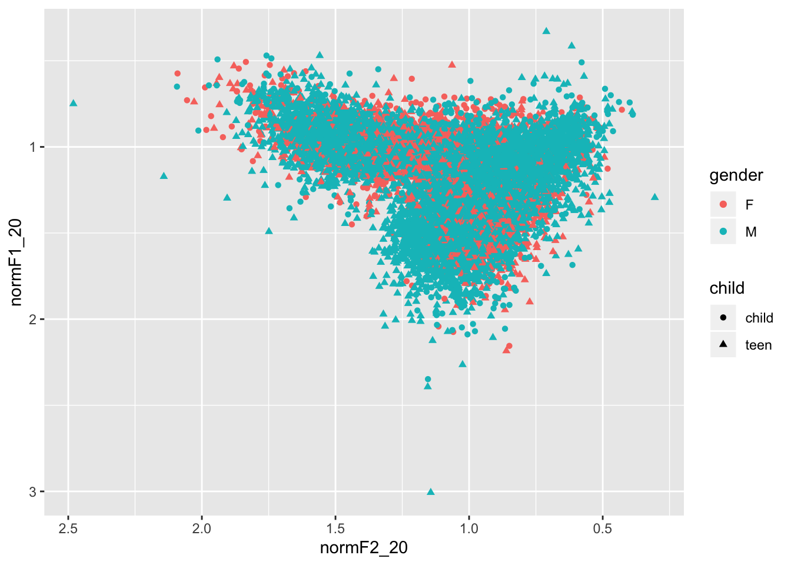
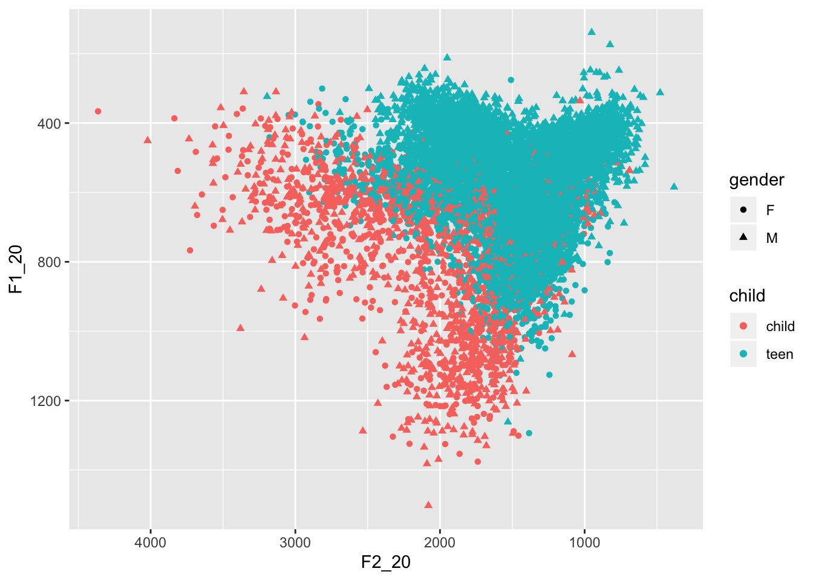
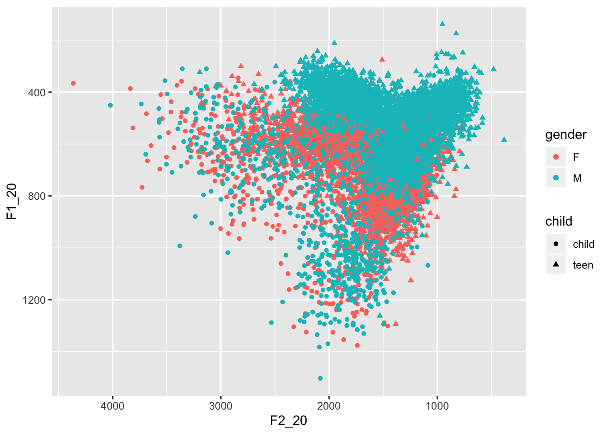

Today I will be normalizing my PhD data using the Watt Fabricius method (Watt & Fabricius 2003).
Comparing sociophonetic variation in different speakers’ vowels can be tricky if the speakers in question have very different vocal tract lengths. This is somewhat the case for adult females vs. adult males, and an even bigger problem when comparing vowels as spoken by a child with the same vowels spoken by an adult. This is because in acoustic phonetics, we measure vowels in terms of resonances in the vocal tract - and these resonances are of course dependent on the shape of each individual’s vocal tract.
We describe vowels in terms of formant frequencies. In terms of the source-filter concept of phonetic production, if the voice box is the source of the sound, the vocal tract becomes the filter. The sound made in the larynx is complex, made up of different harmonics. The first harmonic we call ‘formant 0’ or F0, and this is the fundamental frequency of the speaker’s voice. The other harmonics are multiples of F0.
Different configurations of the vocal tract may amplify or dampen different harmonics in the voice. In particular, we know that the next two harmonics after F0 - the first formant (F1) and the second formant (F2) - correspond to dimensions of tongue movement in the vocal tract: when the body of the tongue is higher in the vocal tract, F1 will be lower, and if the tongue is low in the mouth, F1 will be higher; when the tongue is further forward, F2 will be higher, and when the tongue is retracted, F2 will be lower.
We will load the dataframe and rename it ‘data’:
load("alldata_oct24.Rdata")
data <- alldata_oct24Check the structure of the data:
str(data)## 'data.frame': 9303 obs. of 26 variables:
## $ X : int 1 2 3 4 5 6 7 8 9 10 ...
## $ sound_label : Factor w/ 7 levels "face","fleece",..: 4 1 4 4 1 6 2 6 1 4 ...
## $ sound_start : num 4.82 14.6 58.8 59.31 78.93 ...
## $ sound_end : num 4.89 14.68 58.94 59.41 79.05 ...
## $ word : Factor w/ 918 levels " TYPE","((ALLAI))",..: 913 503 527 298 510 623 708 434 693 747 ...
## $ utterance : Factor w/ 5242 levels "'cos I have choose you",..: 45 4912 3083 3083 1318 3461 3569 4642 4213 3781 ...
## $ F1_20 : num 549 644 732 560 572 ...
## $ F1_35 : num 553 658 748 626 564 ...
## $ F1_50 : num 565 645 708 608 537 ...
## $ F1_65 : num 575 619 669 592 476 ...
## $ F1_80 : num 593 608 654 580 418 ...
## $ F2_20 : num 1548 2081 1598 1943 2410 ...
## $ F2_35 : num 1558 2116 1522 1819 2434 ...
## $ F2_50 : num 1567 2241 1442 1844 2532 ...
## $ F2_65 : num 1599 2263 1398 1854 2594 ...
## $ F2_80 : num 1589 2118 1404 1830 2692 ...
## $ participant : Factor w/ 35 levels "Ali","Amanda",..: 19 19 19 19 19 19 19 19 19 19 ...
## $ duration : num 0.0679 0.079 0.147 0.1012 0.119 ...
## $ changeF2 : num 41.1 37.3 -193.9 -113.1 281.8 ...
## $ changeF1 : num 44.1 -36.2 -77.4 20.7 -153.8 ...
## $ trajectory : num 60.2 52 208.8 114.9 321.1 ...
## $ gender : Factor w/ 2 levels "F","M": 1 1 1 1 1 1 1 1 1 1 ...
## $ changeF1norm: num 649 -459 -527 204 -1293 ...
## $ changeF2norm: num 605 473 -1319 -1117 2368 ...
## $ traj_norm : num 888 659 1420 1135 2698 ...
## $ child : Factor w/ 2 levels "child","teen": 2 2 2 2 2 2 2 2 2 2 ...There is a not very useful variable in the first column which we will get rid of:
data$X <- NULLThe Watt-Fabricius method works as follows:
As I am dealing with diphthongs, I took measurements of F1 and F2 at five different time points across each vowel token. However, while this is a great way to look at diphthongs, for monophthongs, we assume that the F1 and F2 frequencies do not change over time. Therefore, I will create two new variables in the dataset, where each is an average of F_n across that vowel token.
library(dplyr)##
## Attaching package: 'dplyr'## The following objects are masked from 'package:stats':
##
## filter, lag## The following objects are masked from 'package:base':
##
## intersect, setdiff, setequal, uniondata <- data %>% mutate(meanF1 = (F1_20+F1_35+F1_50+F1_65+F1_80)/5)
data <- data %>% mutate(meanF2 = (F2_20+F2_35+F2_50+F2_65+F2_80)/5)This is going to be a bit complicated so bear with me.
First, I take the names of all the speakers and make this into a vector.
speakers <- levels(data$participant)This loop looks nasty but it’s not. First we create two empty vectors, which will get iteratively filled with each speaker’s mean F1 and mean F2 across their tokens of FLEECE. The loop goes through each item in the vector ‘speakers’, and creates a subset of ‘data’ (the big dataframe) where the level of $participant matches the current value of ‘speaker’. Within that subset, a further subset is created including only tokens of the vowel FLEECE. A mean F1 across tokens of FLEECE is calculated and then added to the vector ‘fleeceF1’. The same with F2 of FLEECE.
#Create empty vectors for each formant
fleeceF1 <- vector()
fleeceF2 <- vector()
for(i in speakers){
speaker <- subset(data, participant==i)
fleece <- subset(speaker, sound_label=="fleece")
meanFleeceF1 = mean(fleece$meanF1)
fleeceF1 <- append(fleeceF1, meanFleeceF1)
meanFleeceF2 = mean(fleece$meanF2)
fleeceF2 <- append(fleeceF2, meanFleeceF2)
}Bind these three vectors together into a dataframe:
newdata <- cbind(speakers, fleeceF1, fleeceF2)
newdata <- as.data.frame(newdata)Now we do exactly the same process to find each speaker’s mean F1 and F2 for TRAP.
trapF1 <- vector()
trapF2 <- vector()
for(i in speakers){
speaker <- subset(data, participant==i)
trap <- subset(speaker, sound_label=="trap")
meanTrapF1 = mean(trap$meanF1)
meanTrapF2 = mean(trap$meanF2)
trapF1 <- append(trapF1, meanTrapF1)
trapF2 <- append(trapF2, meanTrapF2)
}Add to the dataframe:
newdata <- cbind(newdata, trapF1, trapF2)And rename it:
colnames(newdata) <- c("participant", "FLEECEF1", "FLEECEF2", "TRAPF1", "TRAPF2")Now hypothetical /u/:
newdata <- newdata %>% mutate(u_F1 = FLEECEF1)
newdata <- newdata %>% mutate(u_F2 = FLEECEF1)str(newdata)## 'data.frame': 35 obs. of 7 variables:
## $ participant: Factor w/ 35 levels "Ali","Amanda",..: 1 2 3 4 5 6 7 8 9 10 ...
## $ FLEECEF1 : Factor w/ 35 levels "287.477","300.169",..: 14 27 10 19 18 5 2 20 23 34 ...
## $ FLEECEF2 : Factor w/ 35 levels "1917.68675","1975.065",..: 8 23 12 24 18 6 1 35 26 34 ...
## $ TRAPF1 : num 706 863 680 948 747 ...
## $ TRAPF2 : num 1476 1564 1426 1609 1391 ...
## $ u_F1 : Factor w/ 35 levels "287.477","300.169",..: 14 27 10 19 18 5 2 20 23 34 ...
## $ u_F2 : Factor w/ 35 levels "287.477","300.169",..: 14 27 10 19 18 5 2 20 23 34 ...Make sure everything is numeric
newdata$FLEECEF1 <- as.numeric(as.character(newdata$FLEECEF1))
newdata$FLEECEF2 <- as.numeric(as.character(newdata$FLEECEF2))
newdata$u_F1 <- as.numeric(as.character(newdata$u_F1))
newdata$u_F2 <- as.numeric(as.character(newdata$u_F2))Grand mean:
s_formant1 <- vector()
s_formant2 <- vector()
for(i in speakers){
person <- subset(newdata, participant==i)
s_f1 = (person$FLEECEF1+person$TRAPF1+person$u_F1)/3
s_f2 = (person$FLEECEF2+person$TRAPF2+person$u_F2)/3
s_formant1 <- append(s_formant1, s_f1)
s_formant2 <- append(s_formant2, s_f2)
}Add it to newdata:
newdata <- cbind(newdata, s_formant1, s_formant2)colnames(newdata) <- c("participant", "FLEECEF1", "FLEECEF2", "TRAPF1", "TRAPF2", "u_F1", "u_F2", "s_f1", "s_f2")Here goes:
dataX <- merge(data, newdata, by ="participant")Write this to csv:
write.csv(dataX, "normalise_stage1.csv")Create normalized values for the formants:
dataX <- dataX %>% mutate(
normF1_20 = F1_20/s_f1,
normF1_35 = F1_35/s_f1,
normF1_50 = F1_50/s_f1,
normF1_65 = F1_65/s_f1,
normF1_80 = F1_80/s_f1,
normF2_20 = F2_20/s_f2,
normF2_35 = F2_35/s_f2,
normF2_50 = F2_50/s_f2,
normF2_65 = F2_65/s_f2,
normF2_80 = F2_80/s_f2)Here I will create some of the same plots that I’ve done before with raw formant frequencies.
library(ggplot2)Check structure of dataframe:
str(dataX)## 'data.frame': 9303 obs. of 45 variables:
## $ participant : Factor w/ 35 levels "Ali","Amanda",..: 1 1 1 1 1 1 1 1 1 1 ...
## $ sound_label : Factor w/ 7 levels "face","fleece",..: 4 6 4 1 1 7 4 1 4 1 ...
## $ sound_start : num 153 154 213 225 230 ...
## $ sound_end : num 153 154 213 225 231 ...
## $ word : Factor w/ 918 levels " TYPE","((ALLAI))",..: 315 434 200 328 388 653 747 21 22 217 ...
## $ utterance : Factor w/ 5242 levels "'cos I have choose you",..: 4315 4315 2146 2988 502 1097 3630 3871 3871 3871 ...
## $ F1_20 : num 527 709 486 485 539 ...
## $ F1_35 : num 482 769 497 442 490 ...
## $ F1_50 : num 546 795 472 441 465 ...
## $ F1_65 : num 491 798 528 425 572 ...
## $ F1_80 : num 507 798 596 380 608 ...
## $ F2_20 : num 1318 1435 1516 2213 2087 ...
## $ F2_35 : num 1314 1415 1479 2076 2185 ...
## $ F2_50 : num 1428 1400 1428 2232 2219 ...
## $ F2_65 : num 1470 1389 1484 2220 2270 ...
## $ F2_80 : num 1461 1327 1418 2283 2316 ...
## $ duration : num 0.0823 0.064 0.0931 0.0838 0.123 ...
## $ changeF2 : num 143.7 -108.5 -97.9 69.3 228.4 ...
## $ changeF1 : num -20.4 89.3 110.3 -104.9 68.6 ...
## $ trajectory : num 145 141 147 126 238 ...
## $ gender : Factor w/ 2 levels "F","M": 2 2 2 2 2 2 2 2 2 2 ...
## $ changeF1norm: num -248 1395 1185 -1251 558 ...
## $ changeF2norm: num 1746 -1694 -1051 827 1857 ...
## $ traj_norm : num 1764 2194 1584 1500 1939 ...
## $ child : Factor w/ 2 levels "child","teen": 2 2 2 2 2 2 2 2 2 2 ...
## $ meanF1 : num 510 774 516 435 535 ...
## $ meanF2 : num 1398 1393 1465 2205 2215 ...
## $ FLEECEF1 : num 375 375 375 375 375 ...
## $ FLEECEF2 : num 2128 2128 2128 2128 2128 ...
## $ TRAPF1 : num 706 706 706 706 706 ...
## $ TRAPF2 : num 1476 1476 1476 1476 1476 ...
## $ u_F1 : num 375 375 375 375 375 ...
## $ u_F2 : num 375 375 375 375 375 ...
## $ s_f1 : num 485 485 485 485 485 ...
## $ s_f2 : num 1326 1326 1326 1326 1326 ...
## $ normF1_20 : num 1.086 1.46 1.001 0.999 1.11 ...
## $ normF1_35 : num 0.993 1.584 1.023 0.911 1.009 ...
## $ normF1_50 : num 1.124 1.638 0.973 0.908 0.958 ...
## $ normF1_65 : num 1.011 1.644 1.088 0.876 1.179 ...
## $ normF1_80 : num 1.044 1.644 1.228 0.783 1.252 ...
## $ normF2_20 : num 0.993 1.082 1.143 1.669 1.574 ...
## $ normF2_35 : num 0.99 1.07 1.12 1.57 1.65 ...
## $ normF2_50 : num 1.08 1.06 1.08 1.68 1.67 ...
## $ normF2_65 : num 1.11 1.05 1.12 1.67 1.71 ...
## $ normF2_80 : num 1.1 1 1.07 1.72 1.75 ...A scatterplot of all vowel tokens:
ggplot(dataX, aes(x=normF2_20, y=normF1_20))+geom_point(aes(color=child, shape=gender))+scale_x_reverse()+scale_y_reverse()## Warning: Removed 1 rows containing missing values (geom_point).ggplot(dataX, aes(x=normF2_20, y=normF1_20))+geom_point(aes(color=gender, shape=child))+scale_x_reverse()+scale_y_reverse()## Warning: Removed 1 rows containing missing values (geom_point). This is great because it shows us that once the formant frequencies are normalised, the adolescent and child vowel spaces pretty much map onto one another. Compare a version of this plot using unnormalised values:
ggplot(dataX, aes(x=F2_20, y=F1_20))+geom_point(aes(color=child, shape=gender))+scale_x_reverse()+scale_y_reverse()## Warning: Removed 1 rows containing missing values (geom_point).
ggplot(dataX, aes(x=F2_20, y=F1_20))+geom_point(aes(color=gender, shape=child))+scale_x_reverse()+scale_y_reverse()## Warning: Removed 1 rows containing missing values (geom_point).